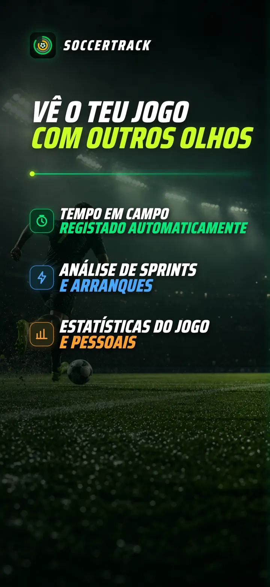
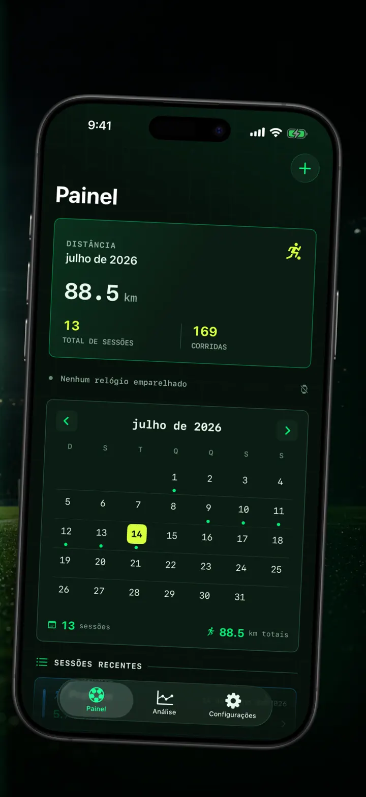
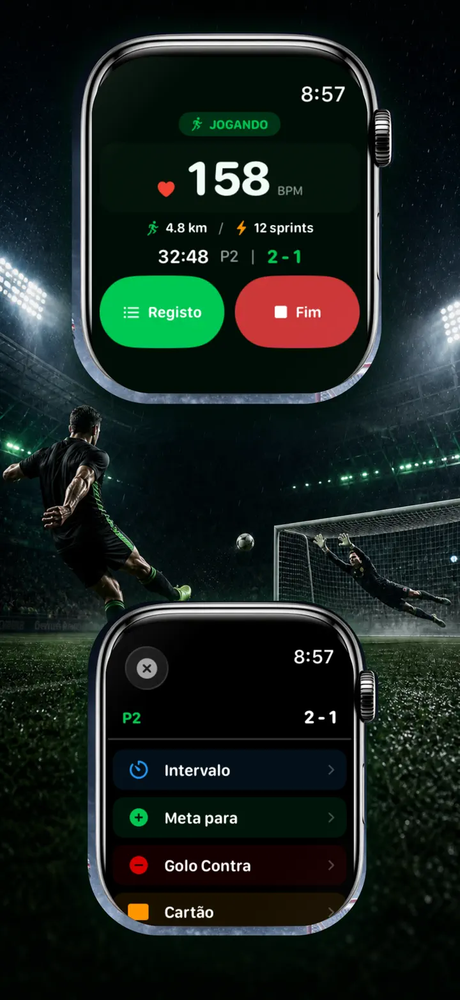
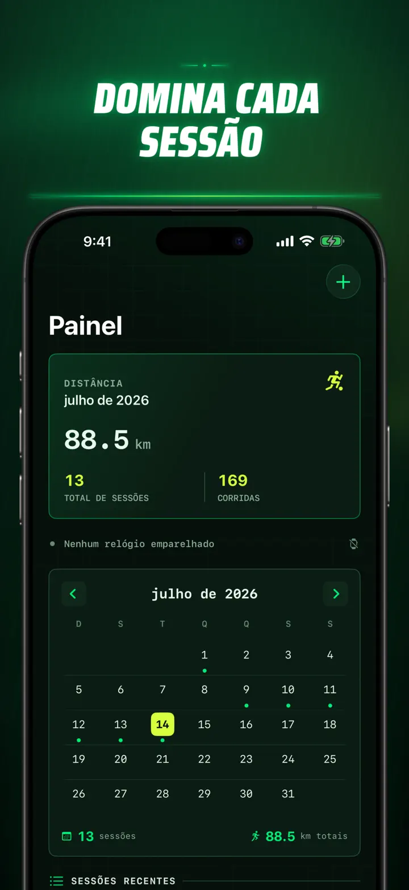
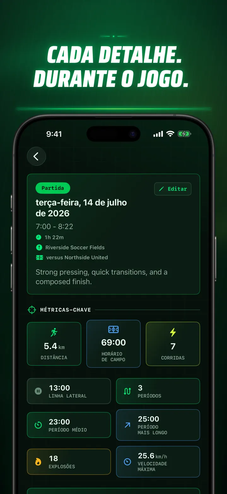
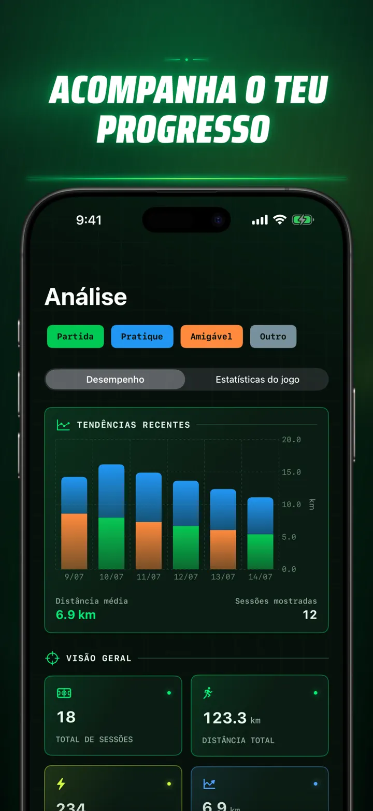
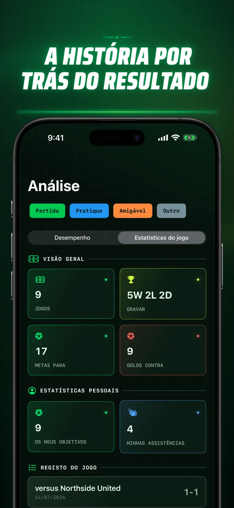
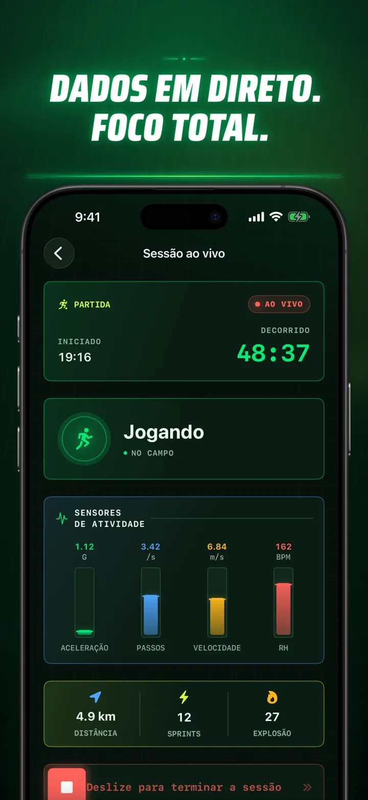
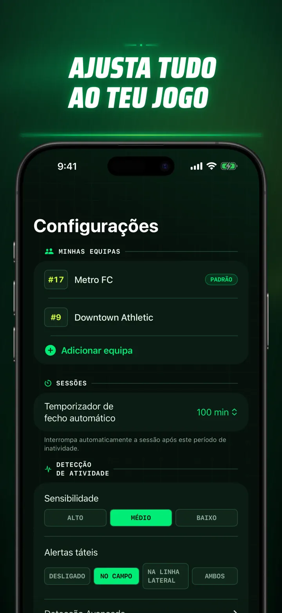
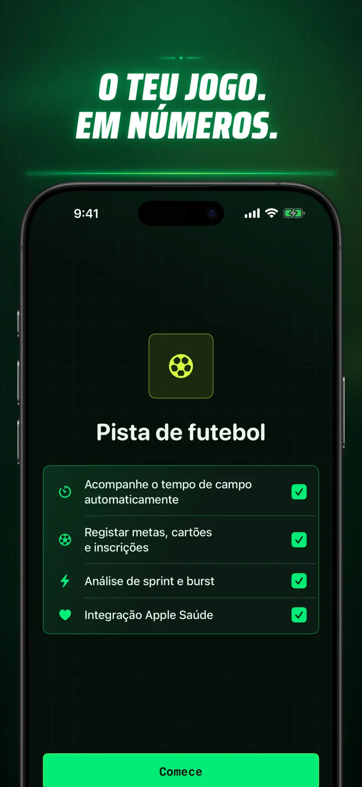

Soccer Time Track
Futebol: tempo e análise
Inicie uma sessão e jogue. O Apple Watch separa automaticamente campo e banco e regista métricas em direto, sprints, lances e tendências.
Descarregar na App Store
Sobre a app
Veja o seu jogo de outra forma.
Soccer Time Track transforma o Apple Watch num assistente de jogo para jogadores que querem compreender muito mais do que o resultado final. Comece no pulso, concentre-se no jogo e consulte depois no iPhone uma imagem detalhada do seu desempenho.
TEMPO EM CAMPO AUTOMÁTICO
Saiba quando esteve realmente em ação. Os sinais de movimento, treino e localização ajudam a distinguir os períodos em jogo, de baixa atividade e no banco. Obtém:
- Tempo em campo e no banco
- Entradas em campo e uma cronologia clara da sessão
- Uma análise detalhada de como decorreu a atividade
O JOGO, A PARTIR DO PULSO
Escolha Jogo, Treino, Amigável ou Outro. Durante a partida, registe:
- Golos marcados e sofridos
- Os seus golos e assistências
- Cartões amarelos e vermelhos
- Substituições e mudanças de período
O SEU JOGO EM NÚMEROS
Vá além dos minutos com métricas como:
- Distância
- Velocidade média e máxima
- Sprints e arranques de alta intensidade
- Frequência cardíaca e calorias ativas
- Cadência e aceleração
DADOS EM DIRETO, FOCO TOTAL
Um iPhone emparelhado pode apresentar métricas em direto enquanto o Apple Watch mantém o treino ativo. Continua concentrado no jogo e os dados são registados em segundo plano.
ACOMPANHE O SEU PROGRESSO
Reúna jogos, treinos, amigáveis e outras sessões num único histórico. Explore tendências e recordes pessoais, compare desempenhos e adicione equipa, número da camisola, adversário, local e notas para preservar a história de cada resultado.
Precisa dos dados noutro lugar? Exporte sessões, entradas em campo e eventos em CSV ou JSON.
CRIADO PARA APPLE WATCH E APPLE HEALTH
Com a sua permissão, Soccer Time Track usa dados de treino, frequência cardíaca, movimento e localização para criar análises e guardar treinos de futebol concluídos no Apple Health. O acompanhamento automático requer um Apple Watch. Também pode adicionar uma sessão manualmente no iPhone.
OS SEUS DADOS, O SEU JOGO
As suas sessões ficam nos seus dispositivos e, com a sincronização do iCloud ativa, na sua base de dados privada do iCloud. Soccer Time Track não exige conta, não apresenta publicidade e não utiliza análise de terceiros.
Deixe de adivinhar quanto jogou. Comece a ver o que fez com cada minuto.
Política de Privacidade: https://masawata.net/SoccerTimeTrack/privacy-policy.html Termos de Serviço: https://www.apple.com/legal/internet-services/itunes/dev/stdeula/
Capturas de ecrã









Soccer Time Track
Inicie uma sessão e jogue. O Apple Watch separa automaticamente campo e banco e regista métricas em direto, sprints, lances e tendências.
Descarregar na App Store